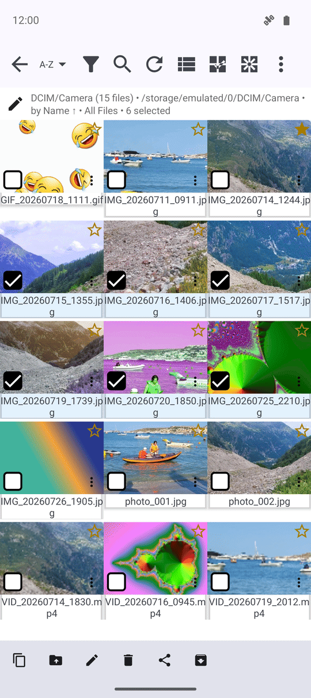
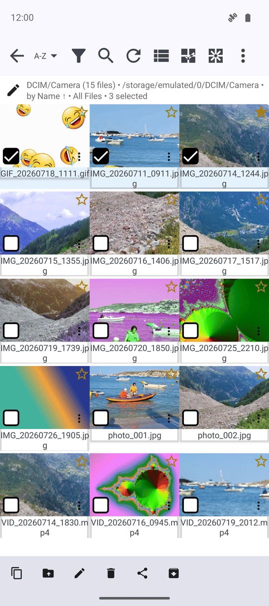
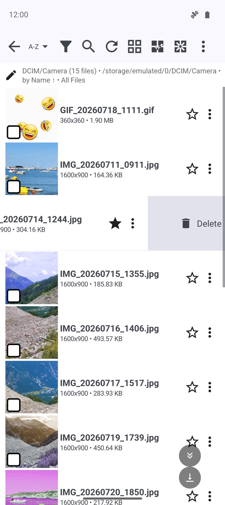
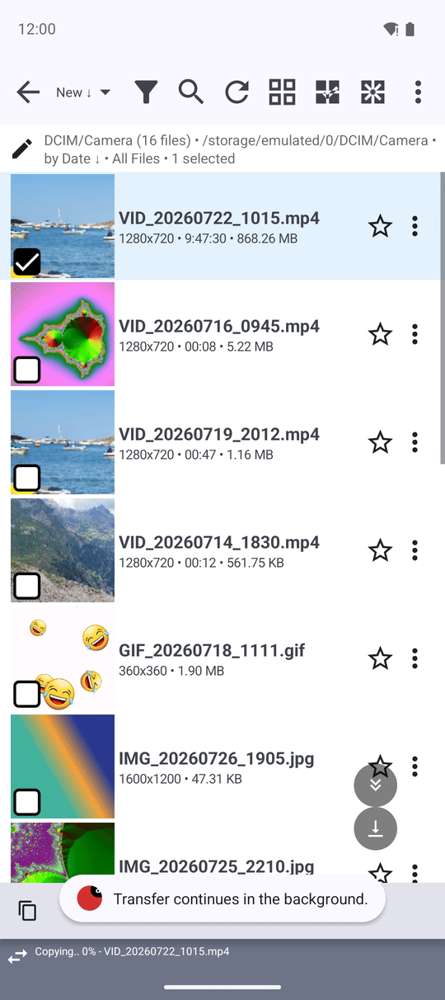

Множинний вибір і пакетні операції
Позначте стільки файлів, скільки потрібно, довгим натисканням і вибором діапазону, а тоді виконайте Копіювати, Перемістити, Видалити, Поділитися чи Архівувати над усією пачкою одразу з браузера файлів - або скористайтеся власним меню з трьома крапками чи свайпом одного файлу, коли потрібно саме це.
Чому вам це сподобається
Деякі завдання потребують одразу декількох файлів - очистити папку зі скріншотами, перенести тижневу порцію фото на резервний диск чи надіслати другу п'ять файлів за раз. FastMediaSorter дає змогу позначити стільки файлів, скільки потрібно, і виконати одну дію над усіма одразу, а свайп чи власне меню рядка й далі покривають випадки, коли треба працювати лише з одним файлом.
Копіювання чи переміщення багатьох файлів може тривати довго, особливо через мережу. Щойно ви відправите операцію у фон, вона продовжить виконуватися сама, тож вам не доведеться просто дивитися на смугу прогресу.
- ✓ Встановлений FastMediaSorter із відкритим ресурсом у браузері файлів.
- ✓ Множинний вибір, групове меню файлу, дії свайпом по рядку та смуга фонової передачі є в кожній редакції: Standard, noLegal, Lite, Photos, Legacy, VR і FOSS.
- ✓ Права на запис у ресурсі для Переміщення, Перейменування, Видалення й Архівування - ресурс лише для читання все одно дозволяє Копіювання й Надсилання.
Виберіть більше одного файлу
Довго натисніть будь-який файл, щоб увійти в режим вибору. На кожному рядку з'явиться прапорець, а файл, який ви натиснули, уже буде позначено. Довго натисніть прапорець іншого файлу - і всі файли між ними виберуться одразу, замість того щоб позначати кожен вручну.
Вибрати все і Зняти вибір на верхній панелі покривають обидві крайності, а повторний дотик до позначеного прапорця знімає вибір лише з цього одного файлу.

Виконайте одну дію над усім вибором
Щойно ви виберете файли, знизу з'явиться панель дій: Копіювати, Перемістити, Видалити, Поділитися і, для власного сховища цього пристрою, Архівувати. Торкніться однієї з них - і дія виконається одразу для всіх вибраних файлів. Якщо ви випадково видалили чи перемістили щось не те, на тій самій панелі одразу з'явиться кнопка Скасувати - доки FastMediaSorter ще пам'ятає цю операцію.
Перейменувати також є на панелі, але відкриває діалог, лише коли вибрано рівно один файл - перейменування пачки файлів одразу виконує окремий інструмент. Для копіювання й переміщення потрібен ресурс-призначення, куди надіслати файли; див. Переміщення, копіювання та видалення файлів.

Свайп по рядку для миттєвої дії
У списку файлів свайп ліворуч або праворуч виконує одну дію без відкриття будь-якого меню. За замовчуванням один напрямок видаляє файл, а інший відкриває Надіслати до.., але для кожного напрямку можна вибрати іншу дію - або вимкнути його зовсім - у Налаштуваннях, на вкладці Загальні, у розділі «Інтерфейс браузера файлів», у пунктах Дія жесту ліворуч і Дія жесту праворуч.
Поки рядок зсувається, він показує назву дії, яку от-от виконає, тож випадково почату дію можна відпустити до її запуску. Видалення свайпом просить те саме підтвердження, що й видалення з меню, а дія, вимкнена в Налаштуваннях, залишається недоступною й для жесту.

Дії свайпом по рядку працюють у кожній редакції.
Залиште велике копіювання чи переміщення працювати у фоні
Запуск копіювання чи переміщення пачки файлів відкриває діалог прогресу. Торкніться У фон - і операція продовжить виконуватися, поки ви й далі переглядаєте файли. Внизу екрана перегляду з'явиться тонка смуга з назвою операції, відсотком виконання та файлом, що копіюється зараз - торкніться смуги будь-коли, щоб знову відкрити діалог прогресу.

Що ви отримаєте
Ви можете зібрати цілу пачку файлів довгим натисканням і вибором діапазону та відправити її в один дотик, скористатися власним меню чи свайпом одного файлу, коли потрібно саме це, і тримати велику передачу у фоні, не втрачаючи її з поля зору.
Поради та усунення несправностей
- Передумали під час свайпу? Посуньте рядок назад до відпускання пальця, або вимкніть цей напрямок у Налаштуваннях, якщо ним не користуєтеся.
- Перейменовуєте кілька файлів одразу? Для цього потрібен окремий інструмент - дивіться рецепт Шаблони пакетного перейменування.
- Вибираєте клавіатурою чи D-pad? Розширюйте вибір вгору чи вниз, не торкаючись екрана - дивіться рецепт Навігація клавіатурою, D-pad і на ТВ.
- На панелі бачите тільки Копіювати й Поділитися? Перемістити, Перейменувати, Видалити й Архівувати потребують прав на запис у ресурсі - ресурс лише для читання навмисно їх приховує.